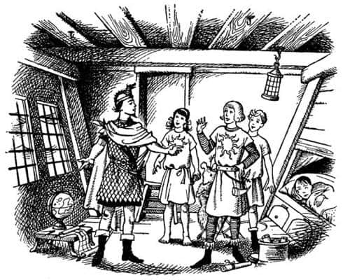
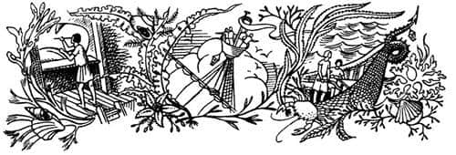
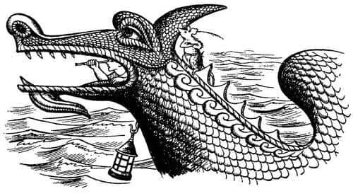
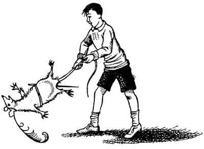

Şafak Yıldızı Gemisinde
“Nihayet gelebildin Lucy” dedi Caspian. “Biz de seni bekliyorduk. Bu, kaptanımız, Lord Drinian.”
Siyah saçlı bir adam diz üstü çöktü ve Lucy’nin elini öptü. Onlardan başka sadece Bastıbacak ve Edmund oradaydı.
“Eustace nerede?” diye sordu Lucy.
“Yatıyor” dedi Edmund, “onun için bir şey yapabileceğimizi sanmıyorum. Ona iyi davranmaya çalıştıkça daha da kötüleşiyor.”
“Bu arada” dedi Caspian, “konuşmak istiyoruz.”
“Elbette” dedi Edmund. “Öncelikle zaman hakkında. Narnia’yı senin taç giyme töreninden hemen önce terk etmiştik; bizim zamanımıza göre sadece bir yıl oluyor. Narnia’da kaç yıl geçti?”
“Tamı tamına üç yıl” dedi Caspian.
“Her şey yolunda mı?” diye sordu Edmund.
“Her şey yolunda olmasaydı, krallığımı terk edip denize açılır mıydım hiç?” diye cevapladı Kral. “Bundan daha iyi olamazdı. Telmarlılar, cüceler, konuşan hayvanlar, Faunlar ve diğerleri arasında hiçbir sorun yok. Sınırlardaki o belalı devleri geçen yaz öylesine kötü bir bozguna uğrattık ki, artık vergi ödüyorlar. Ben uzaklardayken yerime vekil olarak bırakabileceğim mükemmel bir kişi var; Cüce Yaygaracı. Hatırlıyor musunuz?”
“Sevgili Yaygaracı” dedi Lucy, “elbette hatırlıyorum. Ondan iyisini bulamazdın.”
“Bir porsuk kadar sadık ve bir fare kadar cesurdur, Bayan” dedi Drinian. “Bir aslan kadar” diyecekken, Bastıbacak’ın gözlerini ona diktiğini fark etmişti.
“Rotamız ne?” diye sordu Edmund.
“Eee” dedi Caspian, “bu oldukça uzun bir hikâye. Ben çocukken gaspçı amcam Miraz’ın, babamın yedi arkadaşını Issız Adalar’ın ötesindeki bilinmeyen doğu denizlerini keşfetmeye gönderdiğini hatırlarsınız belki. Onlardan kurtulmak istiyordu, yoksa kral olamazdı çünkü.”
“Evet” dedi Lucy, “ve hiçbiri geri dönmemişti.”
“Doğru. Şey, taç giyme günümde, Aslan’ın da onayıyla Narnia’da barışı sağladığımda, babamın arkadaşlarını bulmak ya da akıbetlerini öğrenmek ve öç almak için bir yıl bir gün boyunca yelken açacağıma yemin etmiştim. İsimleri şöyleydi: Lord Revilian, Lord Bern, Lord Argoz, Lord Mavramorn, Lord Octesian, Lord Restimar ve – hatırlaması çok zor olan diğeri.”

“Lord Rhoop, efendim” dedi Drinian.
“Rhoop, Rhoop, elbette” dedi Caspian. “Asıl amacım bu. Fakat Bastıbacak’ın daha büyük bir amacı var.” Herkesin bakışları fareye döndü.
“Ruhum kadar büyük” dedi Bastıbacak. “Belki de boyum kadar küçük. Neden dünyanın doğu ucuna ulaşmayalım ki? Orada ne bulabiliriz? Ben Aslan’ın ülkesini bulacağımızı umuyorum. Büyük Aslan her zaman doğudan, denizin ötesinden geliyor.”
“Bence bu iyi bir fikir” dedi Edmund, korkuyla karışık saygılı bir sesle.
“Ancak” dedi Lucy, “Aslan’ın ülkesinin o türden bir ülke olduğunu mu sanıyorsunuz – yani gemiyle gidebileceğiniz türden bir ülke olabilir mi ki?”
“Bilmiyorum Madam” dedi Bastıbacak. “Ancak şu var. Ben daha beşikteyken bir orman kadını, yani bir orman perisi bana şu mısraları söylemişti:
Gökyüzüyle suyun birleştiği,
Dalgaların tatlı tatlı yükseldiği yerde,
Şüphen olmasın, Bastıbacak,
Bulacaksın aradıklarını,
Doğu mutlaka oradadır.
Ne anlama geldiğini bilmiyorum. Bütün yaşamım boyunca beni büyüledi bu sözler.”
Kısa bir sessizlikten sonra Lucy, “Şimdi neredeyiz, Caspian?” diye sordu.
“Bunu en iyi Kaptan anlatabilir” dedi Caspian, böylece Drinian haritayı çıkarıp masanın üzerine serdi.
“Konumumuz şu” dedi, parmağıyla işaret ederek. “Ya da bugün öğlen öyleydi. Cair Paravel’den çıktığımızda oldukça iyi bir rüzgâr vardı ve biraz kuzeye doğru gidip ertesi gün Galma’ya ulaştık. Orada limanda bir hafta demirledik, çünkü Galma dükü, Majesteleri için büyük bir turnuva düzenledi ve Majesteleri birçok şövalyeyi atından düşürdü…”
“Ben de birkaç kez kötü şekilde düştüm, Drinian. Hâlâ vücudumda bazı morluklar var” diye araya girdi Caspian.
“Birçok şövalyeyi atından düşürdü” diye tekrarladı Drinian gülümseyerek. “Eğer Majesteleri dükün kızıyla evlenseydi, dükün memnun olacağını düşünüyorduk, ama bunun sözü bile edilmedi…”
“Gözlerini kısıyordu ve ayrıca çilliydi de” dedi Caspian.
“Vah zavallı kız” dedi Lucy.
“Sonra Galma’dan yelken açtık” diye devam etti Drinian, “iki gün boyunca çoğunlukla küreklere asıldık çünkü hava oldukça sakindi, sonra tekrar rüzgâr çıktı ve Galma’dan ayrılışımızın dördüncü gününde Terebinthia’ya varabildik. Terebinthia Kralı karaya ayak basmamamız için bizi uyardı, Terebinthia’da salgın bir hastalık olduğunu söyledi. Biz de burnu dönüp şehirden uzaktaki küçük bir nehirde demirledik, çünkü su almamız gerekiyordu. Sonra, Yedi Adalar’a doğru yola çıkmamızı sağlayan güneydoğu rüzgârlarının başlaması için üç gün bekledik. Denize açıldığımızın üçüncü günü (donanımından Terebinthia gemisi olduğu anlaşılan) bir korsan gemisi bize yetişti, ama karşılıklı atılan birkaç oktan sonra, iyi silahlanmış olduğumuzu anlayıp yaklaşmaya cesaret edemedi…”

“Bizim onları kovalayıp, bordalayarak içindeki tüm ana kuzularını asmamız gerekirdi” dedi Bastıbacak.
“Beş gün sonra, bildiğiniz gibi Yedi Adalar’ın en batıda olanı Muil’in görüş mesafesine girdik. Sonra boğazları kürek çekerek geçip gün batarken Brenn Adası’ndaki Kızıl Cennet’e geldik, orada bize güzel bir ziyafet çekip istediğimiz kadar su ve erzak almamıza izin verdiler. Kızıl Cennet’ten altı gün önce ayrıldık ve öyle hızlı geldik ki, yarından sonra Issız Adalar’ı görmeyi umut ediyorum. Kısacası, otuz gündür denizdeyiz ve Narnia’nın dört yüz fersah uzağındayız.”
“Peki Issız Adalar’dan sonra?” dedi Lucy.
“Issız Adalılar söylemedikçe, bilemeyiz Majesteleri” diye cevapladı Drinian.
“Bizim zamanımızda bilmiyorlardı” dedi Edmund.
“O zaman” dedi Bastıbacak, “gerçek macera Issız Adalar’dan sonra başlayacak.”
Caspian akşam yemeğinden önce gemiyi gezdirmeyi teklif etti, ne var ki Lucy’nin vicdanı buna izin vermedi. “Benim gidip Eustace’i görmem gerekiyor. Deniz tutması çok kötüdür biliyorsunuz. Eğer o eski iksirim yanımda olsaydı onu tedavi edebilirdim” dedi.
“Ama iksir burada” dedi Caspian. “Tamamen unutmuşum. Giderken geride bıraktığın için kraliyet hazinesi olarak kabul edilmesi gerektiğini düşündüm ve yanımda getirdim – eğer deniz tutması gibi basit bir şey için harcanması gerektiğini düşünüyorsan?”
“Sadece bir damla yeterli” dedi Lucy.
Caspian sıraların altındaki kilitli dolaplardan birini açtı ve Lucy’nin çok iyi hatırladığı o güzel elmas şişeyi çıkardı. “Sana ait olanı al, Kraliçe” dedi. Sonra kamarayı terk edip dışarıya, günışığına çıktılar.
Güvertede, direğin iki tarafında iki büyük, uzun ambar kapağı vardı ve güzel havalarda hep yapıldığı gibi, iki kapak da geminin gövdesine ışık ve hava girmesi için açılmıştı. Caspian’ın önderliğinde, gerideki kapaktan bir merdivenle aşağıya indiler. Burada kendilerini, geminin bir ucundan diğer ucuna kadar uzanan ve içinde kürek çekmek için sıraların olduğu bir yerde buldular. Işık, küreklerin çıktığı deliklerden içeriye giriyor ve tavanda oynaşıyordu. Caspian’ın gemisi, kölelerin kürek çektiği o iğrenç kalyonlardan biri değildi. Kürekler sadece rüzgâr olmadığında ya da limana girip çıkmak için kullanılıyordu ve (bacakları kısa olan Bastıbacak hariç) herkes sırayla kürek çekiyordu. Her iki tarafta, sıraların altları kürekçilerin ayaklarını koymaları için boş bırakılmıştı, ama ortada boydan boya omurgaya kadar inen bir tür çukurluk vardı ve burası her türlü erzakla doldurulmuştu; un çuvalları, su ve bira fıçıları, domuz etiyle dolu fıçılar, bal kavanozları, deri mataralarda şaraplar, elmalar, çerezler, peynirler, kurabiyeler, şalgamlar… Tavandan – yani güvertenin altından – jambonlar, ipe dizili soğanlar ve işlerini bitirmiş, hamaklarında yatan adamlar sallanmaktaydı. Caspian önde, diğerleri arkada, sıradan sıraya atlayarak geminin gerisine doğru yürüdüler; ama Caspian’ın bir adımı, Lucy için adımla atlayış arasında bir şeye, Bastıbacak içinse gerçekten çok uzun bir atlayışa denk geliyordu. Böyle devam edip, ortasında kapı olan bir bölmeye geldiler. Caspian kapıyı açarak, onları kıçtaki kamaraların bulunduğu bölgeyi kaplayacak büyüklükte bir odaya soktu. Pek güzel bir yer değildi. Tavan çok alçaktı ve aşağıya doğru öyle eğimliydi ki, neredeyse yere değecekti. Ayrıca kalın camlı lombozları da vardı ama sualtında oldukları için açılmaları imkânsızdı. Gemi sallandıkça, lombozlarda bir güneş ışığı, bir denizin soluk yeşil rengi görülüyordu.
“Bizim burada yatmamız gerekiyor Edmund” dedi Caspian. “Yatağı kuzenine bırakır, kendimize bir hamak asarız.”
“Yalvarırım Majesteleri—” dedi Drinian.
“Hayır, hayır dostum” dedi Caspian, “bunu daha önce tartışmıştık. Sen ve Rhince (Rhince, ikinci kaptandı) gemiyi kullanıyorsunuz ve birçok gece biz şarkı söyleyip hikâyeler anlatırken, sizler çalışıp, bizleri kollamak durumunda kalıyorsunuz; bunun için sen ve o, yukarıda, iskele tarafındaki kamarada yatmalısınız. Kral Edmund ve ben burada çok rahat yatabiliriz. Yabancı ne âlemde?”
Yüzü yemyeşil olan Eustace kaşlarını çattı ve fırtınanın dineceğini gösteren bir belirti olup olmadığını sordu. Fakat Caspian, “Hangi fırtına?” dedi ve Drinian gülmeye başladı.
“Fırtına ha, genç efendi!” diye kahkaha attı. “Bu, insanın arzulayabileceği en güzel hava.”
“Bu da kim?” dedi Eustace sinirle. “Çıkarın onu buradan. Sesi beynimi deliyor.”
“Seni iyileştirecek bir şey getirdim, Eustace” dedi Lucy.
“Of, git buradan, beni yalnız bırak” diye hırladı Eustace. Sonra dayanamayıp şişeden bir yudum içti. Önce iğrenç bir şey olduğunu söyledi, ancak yuttuktan biraz sonra yüzünün rengi yerine geldi, ayrıca kendini daha iyi hissettiği de kesindi, çünkü fırtına ve bulantıdan bahsetmeyi kesip, karaya çıkmak istediğini anlatmaya başlamış ve ilk limandaki Britanya Konsolosluğu’nda “resmi şikâyet dilekçesi” doldurarak hepsini şikâyet edeceğini söylemişti. Bastıbacak dilekçenin ne olduğunu ve nasıl doldurulacağını sorduğunda (Bastıbacak bunun yeni bir savaş planı olduğunu düşünmüştü) Eustace sadece, “Bunu bilmemeniz garip” diyebilmişti. Sonunda Eustace’e, bildikleri en yakın kara parçasına doğru gitmekte olduklarını söylediler. Onu – Harold Enişte’nin yaşadığı – Cambridge’e geri gitmesinin Ay’a gitmesi kadar zor olduğuna da ikna ettiler. Eustace de asık suratla, onun için getirilen yeni elbiseleri giyip güverteye çıkmaya karar verdi.

Caspian onlara gemiyi gezdirmeye devam etti, zaten geminin büyük bir bölümünü görmüşlerdi. Geminin baş kasarasına çıktılar. Yaldızlı ejderhanın boynunun içindeki küçük basamakta ayakta duran ve ejderhanın açık ağzından dışarıya bakan adamı gördüler. Geminin mutfağıyla, tayfabaşı, marangoz, aşçı ve başokçu gibi insanların kamaraları baş kasaradaydı. Mutfağın geminin burnunda olmasını garip buluyor ve bacadan çıkan dumanların geminin gerisine doğru yayıldığını hayal ediyorsanız, bunun nedeni rüzgârın her zaman baştan geldiği buharlı gemileri düşünmenizdir. Yelkenli bir gemide rüzgâr arkadan gelir ve kokuya neden olacak her şey, mümkün olduğunca ön tarafa koyulur. Sonra savaş güvertesine çıktılar; orada ileri geri sallanmaları ve güvertenin küçücük görünmesi ilk önceleri korkutucuydu. Eğer düşerseniz, denize değil de güverteye düşeceğinizi garantileyen hiçbir şey yoktu. Sonra geminin kıç tarafına gittiler, Rhince ve tanımadıkları bir başka adam daha büyük dümenin başında görevdeydi. Dümenin arkasından yaldızlarla kaplı ejderhanın kuyruğu yükseliyordu ve bu kuyruğun içinde çepeçevre, küçük bir sıra vardı. Geminin adı Şafak Yıldızı’ydı. Bizim gemilerimizle, ya da Lucy ve Edmund’un Yüce Kral Peter’in emri altında hüküm sürdüğü zamanlarda Narnia’nın sahip olduğu kadırgalar ve kalyonlarla kıyaslandığında küçük bir şeydi, çünkü Caspian’ın atalarının saltanatı sırasında denizcilik neredeyse yok olmuştu. Amcası gaspçı Miraz yedi lordu denize gönderdiğinde, lordlar bir Galma gemisi satın alıp Galmalı tayfaları işe alarak ihtiyaçlarını gidermişlerdi. Caspian, Narnialılar’a denizciliği yeniden öğretmeye başlamıştı ve Şafak Yıldızı o ana kadar inşa ettirdiği en güzel gemiydi. Öylesine küçüktü ki, yelken direğinin önünde, ana ambar kapağı ile bir yanda filika diğer yandaysa tavuk kümesi (tavukları Lucy besliyordu) arasında küçücük bir güverte kalıyordu. Türünün güzel bir örneğiydi, gemicilerin tabiriyle tam bir “leydi”ydi. Çizgileri mükemmel, renkleri sadeydi; her direği, halatı ve çivisi sevgiyle imal edilmişti. Ne ki, Eustace’i hiçbir şey memnun etmiyordu, motorlu tekneler, transatlantik gemiler, uçaklar ve denizaltılarla övünüp duruyordu (“Sanki bunlar hakkında bir şey bilirmiş gibi” diye homurdanmıştı Edmund), ama diğer ikisi Şafak Yıldızı’ndan çok hoşlanmıştı. Yemek için kıçtaki kamaraya döndüklerinde güneşin muhteşem bir kızıllıkta battığını görüp, geminin tatlı tatlı sallanışını hissettiklerinde ve dudaklarındaki tuzu yalayıp, dünyanın doğu ucundaki bilinmeyen ülkeleri düşündüklerinde, Lucy kendini konuşamayacak kadar mutlu hissetmişti.
Eustace’in düşündüklerini en iyi kendi sözleri anlatır, çünkü ertesi sabah artık kurumuş olan elbiselerini giydiğinde, hemen küçük siyah bir not defteriyle kurşunkalem çıkarmış ve günlük tutmaya başlamıştı. Bu not defterini her zaman yanında taşır, sınavlardan aldığı notları yazardı. Herhangi bir dersle gerçekten ilgilenmediği halde notlarına çok dikkat eder ve hatta insanlara, “Ben şu notu aldım. Sen kaç aldın?” diye sorardı, ama şimdi, Şafak Yıldızı’nda sınava girip not alma şansı bulunmadığından, günlük tutmaya başlamıştı. İlk yazdıkları şöyleydi:
“7 Ağustos
Eğer rüya görmüyorsam, tam yirmi dört saattir bu berbat gemideyim ve yirmi dört saattir müthiş bir fırtına esiyor (iyi ki beni deniz tutmuyor). Ön taraftan kocaman dalgalar durmaksızın geliyor, geminin sayısız defa neredeyse battığını gördüm. Diğer herkes bunu fark etmemiş gibi görünüyor; ya gösteriş olsun diye böyle davranıyorlar ya da Harold’ın dediği gibi, sıradan insanların yaptığı en korkakça şeylerden birini yapıyor ve gözlerini gerçeklere kapıyorlar. Böyle küçük ve çürük bir tekneyle denize açılmak delilik. Neredeyse bir cankurtaran sandalı kadar. Ayrıca içi de tamamıyla ilkel. Gerçek bir salonu, telsizi, banyosu ve şezlongları yok. Dün akşam beni geminin her yerine sürüklediler. Caspian’ın, bu küçük, garip oyuncak gemi sanki bir kraliyet gemisiymiş gibi caka satması herkesin midesini bulandırdı. Gerçek gemilerin nasıl olduğunu ona anlatmaya çalıştım, ama Caspian çok kalın kafalı. Ne yazık ki E. ve L. bana arka çıkmadılar. E., buradaki herkesin yaptığı gibi C.’ye yağ çekiyor. Ona ‘Kral’ diyorlar. Ben cumhuriyetçi olduğumu söyledim, ama o bana bunun ne demek olduğunu sordu! Cahil gibi davranıyor. Gemideki en kötü kamaraya, yani mükemmel bir zindana yerleştirildiğimi söylemeye gerek yok. Lucy’ye, güvertedeki o kocaman oda verildi ve odası buradaki diğer odalarla kıyaslandığında çok güzel bir oda. C. bunun, onun kız olmasından kaynaklandığını söylüyor. Ona, Alberta’nın dediğini, yani bu tür şeylerin aslında kızları alçalttığını göstermeye çalıştım ama o çok kalın kafalı. O delikte daha fazla kalırsam hastalanacağımı bile fark etmiyor. E. şikâyet etmememiz gerektiğini söylüyor çünkü C., L.’ye yer açmak için bizimle aynı odayı paylaşıyormuş. Oysa bu, odayı daha kalabalık ve daha kötü yapıyor. Az daha söylemeyi unutuyordum; bir de bir tür fare var ki çok ukala ve hazırcevap. Hoşlarına gidiyorsa diğerleri buna katlanabilir, ama bana bir şey demeye kalkarsa hemen kuyruğunu çekerim. Ayrıca yemekler de korkunç.”
Eustace ve Bastıbacak arasındaki sürtüşme beklendiğinden erken ortaya çıktı. Ertesi gün akşam yemeğinden önce diğerleri masanın etrafında oturmuş yemeği beklerken (denizde olmak insanın iştahını artırır), Eustace elini tutarak içeriye daldı ve bağırmaya başladı:
“O küçük hayvan neredeyse beni öldürüyordu. Kontrol altına alınması gerekiyor. Seni mahkemeye verebilirim Caspian. Onun yok edilmesi için karar çıkarttırabilirim.”
Aynı anda Bastıbacak göründü. Kılıcını çekmişti ve bıyıkları çok korkutucu görünüyordu, ancak her zamanki gibi nazikti.
“Hepinizden özür dilerim” dedi, “özellikle de Kraliçe’den. Buraya kaçacağını bilseydim onu yola getirmek için uygun zamanı kollardım.”
“Ne oluyor Tanrı aşkına?” diye sordu Edmund.
İşin aslı şuydu: Geminin hiçbir zaman yeterince hızlı gitmediğini düşünen Bastıbacak, ejderhanın başının hemen yanındaki küpeştede oturmayı, doğudaki ufku seyretmeyi, ince ve şakrak sesiyle, orman perisinin onun için yazdığı şarkıyı söylemeyi severdi. Gemi ne tarafa yatarsa yatsın asla bir şeye tutunmazdı, dengesini rahatlıkla sağlardı; belki de küpeşteden güverteye kadar uzanan uzun kuyruğu bunu kolaylaştırıyordu. Gemideki herkes onun bu alışkanlığını biliyordu. Hem denizciler de bundan hoşnuttu, çünkü orada birinin bulunması gözcünün konuşacak bir arkadaşı olması anlamına geliyordu. Eustace’in kayarak, yalpalayarak ve tökezleyerek (henüz gemide yürümeye alışmamıştı) neden geminin burnuna kadar gittiğini kesinlikle bilmiyorum. Belki karayı göreceğini umuyordu ya da mutfağa uğrayıp bir şeyler atıştıracaktı. O sallanan uzun kuyruğu görür görmez, kuyruğu tutup, Bastıbacak’ı baş aşağı bir-iki kere döndürmenin, sonra da gülerek kaçmanın harika olacağını düşünmüştü. Başlangıçta plan çok güzel yürüyor gibi görünmüştü. Fare, iri bir kediden daha ağır değildi. Eustace bir çırpıda onu küpeşteden indirmişti; fare küçük ayakları ve açık ağzıyla çok gülünç görünüyordu. Canını kurtarmak için birçok kez kavgaya tutuşmak zorunda kalmış olan Bastıbacak bir an için bile soğukkanlılığını ya da hünerlerini kaybetmedi. Kuyruğundan tutulmuş halde havada döndürülürken kılıç çekmek hiç de kolay değildir, fakat o bunu başardı. Eustace ilk olarak, elini acıtan ve kuyruğu bırakmasına neden olan iki darbe hissetti. Ondan sonra da, güvertede zıplayan bir top misali farenin kendini toparladığını gördü. Karşısında durmuş, şişe benzeyen uzun, parlak ve keskin şeyi göbeğinin bir-iki santim yakınında ileri geri sallıyordu. (Bu Narnia’daki fareler için kemerin altı sayılmıyordu, çünkü onların daha yükseğe ulaşması beklenemezdi.)

“Yapma” diye cıyakladı Eustace, “git, kes şunu. Bu yaptığın tehlikeli bir şey. Yapma diyorum. Caspian’a söyleyeceğim. Sana burunluk taktıracağım ve seni bağlatacağım.”
“Neden kendi kılıcını çekmiyorsun, korkak!” dedi fare cıvıltıyla. “Çek kılıcını ve çık karşıma, yoksa kılıcımla mosmor edene kadar döverim seni.”
“Kılıcım yok” dedi Eustace. “Ben barışçı bir insanım. Kavga etmem.”
“Bana bu zevki vermek niyetinde olmadığını mı söylemek istiyorsun?” dedi Bastıbacak, kılıcını geriye çekip çok ciddi bir ses tonuyla konuşarak.
“Ne demek istediğini anlamıyorum” dedi Eustace, acıyan elini ovuşturarak. “Şaka kaldıramıyorsan, bir daha asla uğraşmam senle.”
“O zaman al şunu” dedi Bastıbacak, “ve şunu… terbiyeni vermek için… bir fareye… ve farenin kuyruğuna… ve bir şövalyeye saygılı olman için…” Her kelimede cücelerin yaptığı ince, gösterişli, çelik ama huş ağacından bir cetvel kadar da esnek ve etkili olan kılıcının yassı tarafıyla Eustace’e vuruyordu. Eustace (elbette) dayak cezasının olmadığı bir okulda okuyordu, dolayısıyla bu onun için çok yeni bir duyguydu. Gemide yürümeye alışık olmamasına rağmen, burundan kaçıp güvertenin tamamını bir dakikadan az bir zamanda geçerek, Bastıbacak’ın sıcak takibinde kamaranın kapısından içeriye dalmasının nedeni buydu. Aslında Eustace’e, kılıç da tıpkı takip kadar sıcak görünüyordu. Hissettiği kadarıyla, kılıcın kor gibi sıcak olması mümkündü.
Eustace, herkesin düello fikrini ciddiye aldığını anladığında ve Caspian’ın ona bir kılıç ödünç vereceğini duyduğunda tedirgin oldu. Drinian ile Edmund’un, Bastıbacak’tan çok daha büyük olmasının dezavantajını gidermek amacıyla, onun bir tür özürlü sayılıp sayılmayacağını tartıştıklarını duyduğunda, sorunun çözülmesi pek de zor olmamıştı. Asık suratla özür diledi, elinin yıkanıp sarılması için Lucy’yle çıktı ve sonra ranzasına gidip usulca yattı.